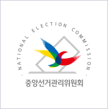
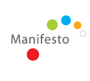
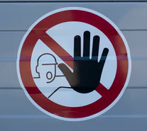

The Service
Process
-
Motiv
- Why you make this service?
- 증가하는 2030세대의 정치 관심
하지만 투표에 대한 의무감만 상승했을 뿐
사람들이 정당, 미디어, 단순한 느낌과 같이 추상적인 감정으로 투표를 하는 문제점 파악
-

Part 1
-
후보자별 약력, 공약
중앙선거관리위원회
- 기존의 선거관리위원회 웹사이트의 후보 약력, 공약을 열람할 수 있게 연결
-
Part 2
-
후보자에 대한 시청각 자료
토론회, 후보자 공약 발표회 등
- 후보자들이 출연한 토론회나 라디오 연결 등의 자료를 연결하여 유권자들이 후보자들의 신념을 확인할 수 있는 자료 제공
-

Part 3
-
공약이행률
한국매니페스토실천본부
- 후보자가 초선이 아닌경우, 공약이행률에 대해 제시하여 후보자에 신뢰성에 대한 판단 기회 제공
-
Part 4
-
후보자에게 묻는다.
왜 유권자가 직접 묻는 기회가 적을까?
- 토론회와 같은 후보자를 접할 수 있는 공개적인 장소로 방청을 가도 유권자가 질문을 할 수 있는 기회는 적다. 유권자가 후보자에게 온라인으로 물어볼 수 있는 기회 제공
-

P.P
-
Possible Problem
이것은 비판인가 비방인가?
- 정당에 대한 과한 신념으로 상대당 후보자에 대한 단순한 비방과 비난의 문제 발생 가능
-
C.P
-
Counterplan
유권자 실명제
- 주민등록주소지를 기재한 계정등록으로 유권자들이 본인의 지역구 후보자들에게만 실명으로 질문하도록 설정
-
Ideal
-
Aim
전자민주주의 토대
- 점차적으로 증가하는 O2O와 더불어 전자민주주의의 기반을 다지고 성숙한 선거문화 실현이 최종적인 목표